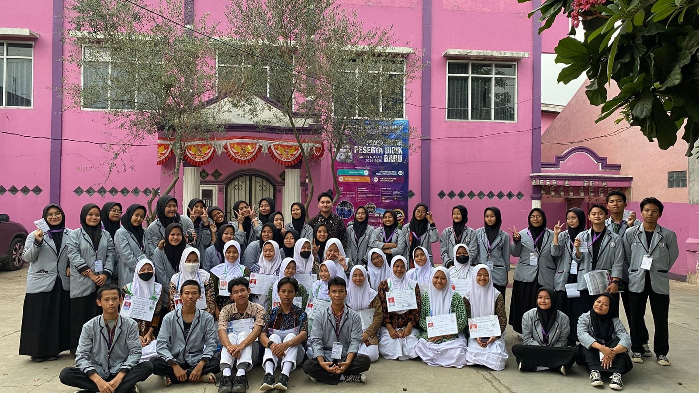
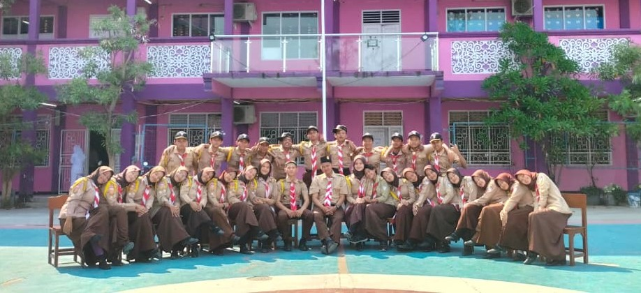
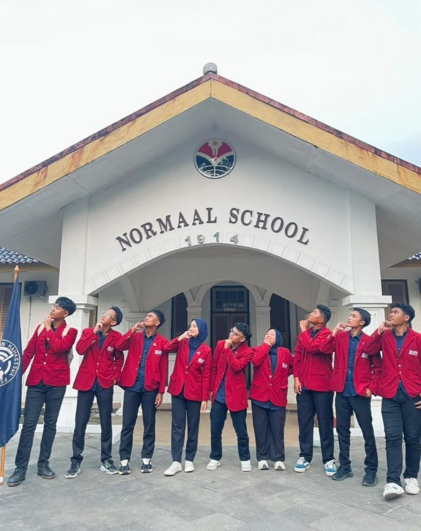

Berikut adalah daftar pengalaman organisasi yang pernah dan sedang saya jalani

Selama menempuh pendidikan di SMK Bintang Harapan, saya aktif dalam Organisasi Siswa Intra Sekolah (OSIS). Pada periode pertama, saya menjadi anggota OSIS dan terlibat dalam berbagai kegiatan serta program kerja sekolah. Pada periode kedua, saya dipercaya menjadi Ketua OSIS dan bertanggung jawab dalam mengoordinasikan anggota, mengarahkan pelaksanaan program kerja, serta membangun kerja sama antaranggota dalam menjalankan kegiatan organisasi.

Selama menempuh pendidikan di SMK Bintang Harapan, saya aktif dalam EkstraKurikuler Pramuka. Pada periode pertama, saya menjadi anggota Pramuka biasa. Pada periode kedua, saya dipercaya menjadi Teks Pramuka. Dalam peran tersebut, saya bertugas mengarahkan, membimbing, dan mengajarkan materi-materi kepramukaan kepada anggota, layaknya seorang pembina atau pengajar. Pada tahun 2024, saya terpilih sebagai Pramuka Garuda Kabupaten Bekasi sebagai bentuk pencapaian atas keaktifan dan kontribusi saya dalam kegiatan kepramukaan.

Saya aktif dalam Himpunan Mahasiswa Pendidikan Sistem dan Teknologi Informasi (HIMA PSTI) dan diamanahi pada Badan Legislatif, tepatnya di Komisi 2. Dalam Komisi 2, saya diamanahi untuk melakukan pengawasan terhadap Departemen Minat dan Bakat. Tugas saya meliputi memantau pelaksanaan program kerja, mengevaluasi perkembangan kegiatan, serta menyampaikan aspirasi dan masukan untuk mendukung kinerja departemen.

Saya aktif dalam Lembaga Penelitian dan Pengkajian Intelektual Mahasiswa (LEPPIM) sebagai staf Departemen P2M (Pengabdian pada Masyarakat). Dalam peran tersebut, saya terlibat dalam perencanaan dan pelaksanaan kegiatan pengabdian kepada masyarakat serta mendukung berbagai program yang bertujuan memberikan kontribusi dan manfaat bagi masyarakat.
2026 Adelio Rafa Salam